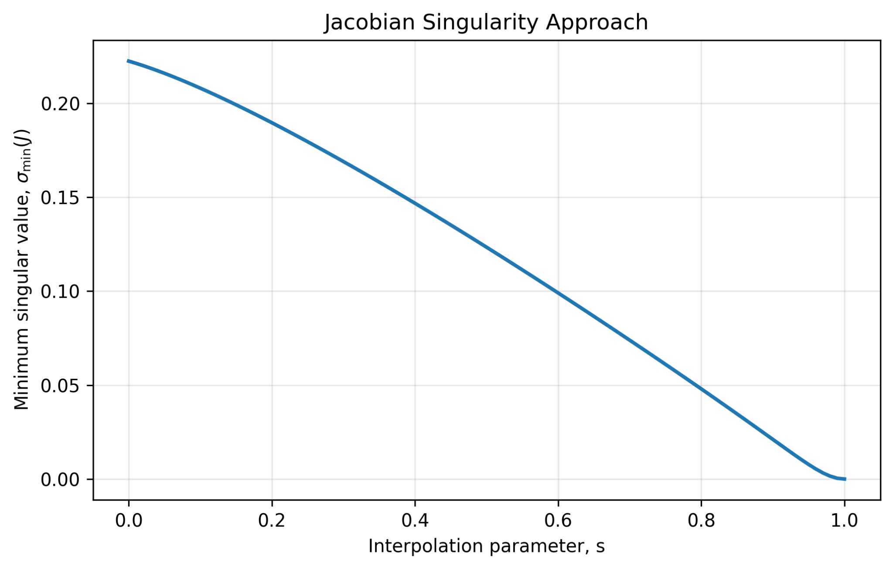
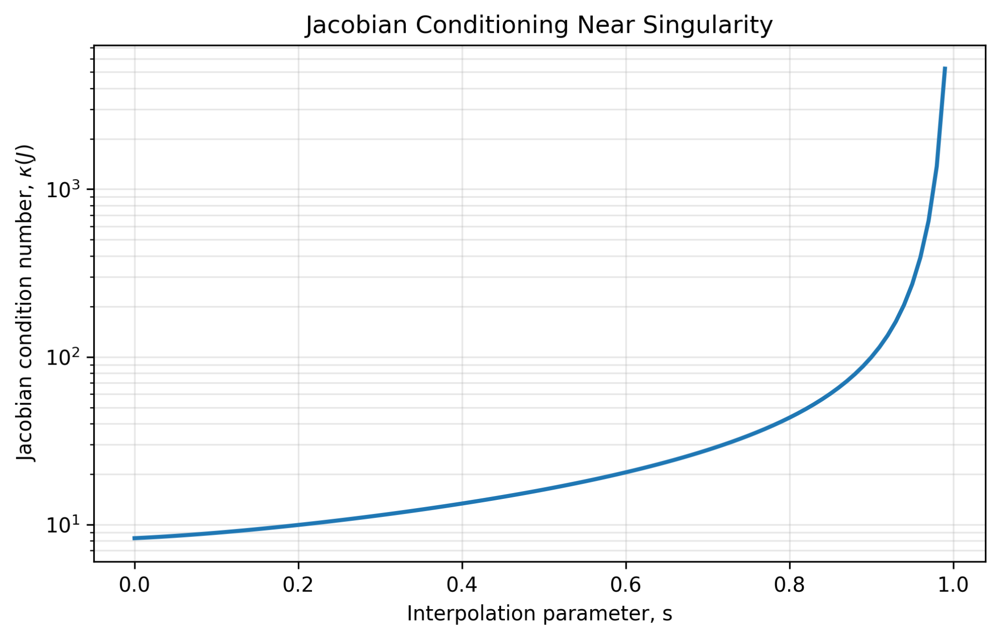
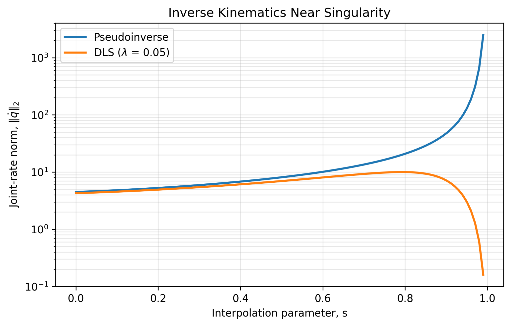
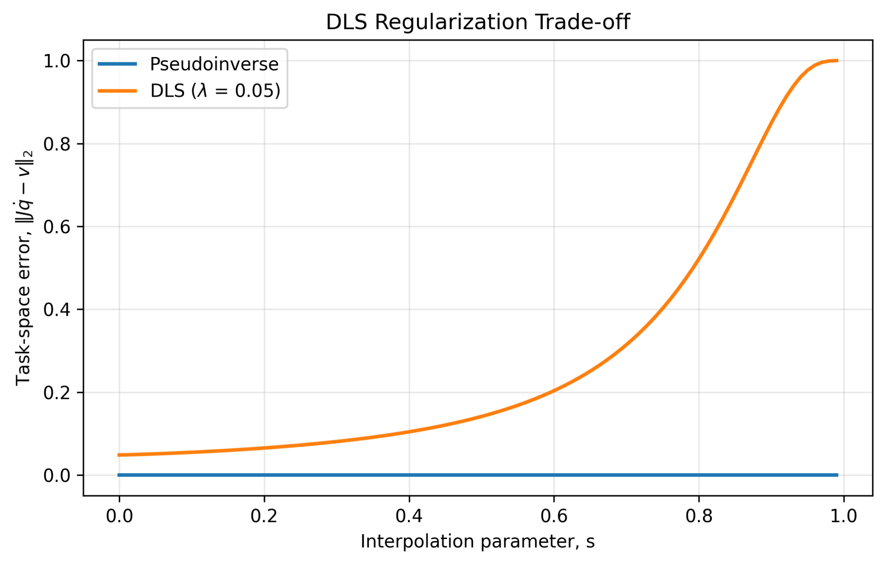
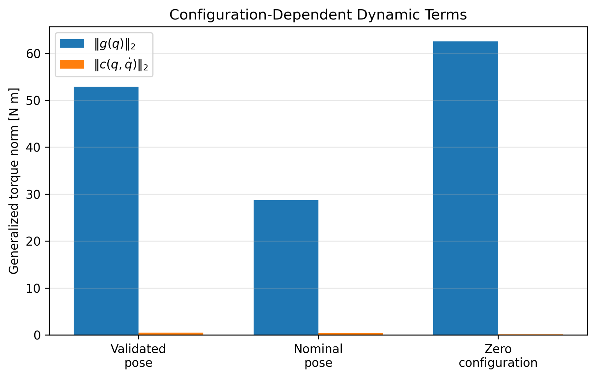
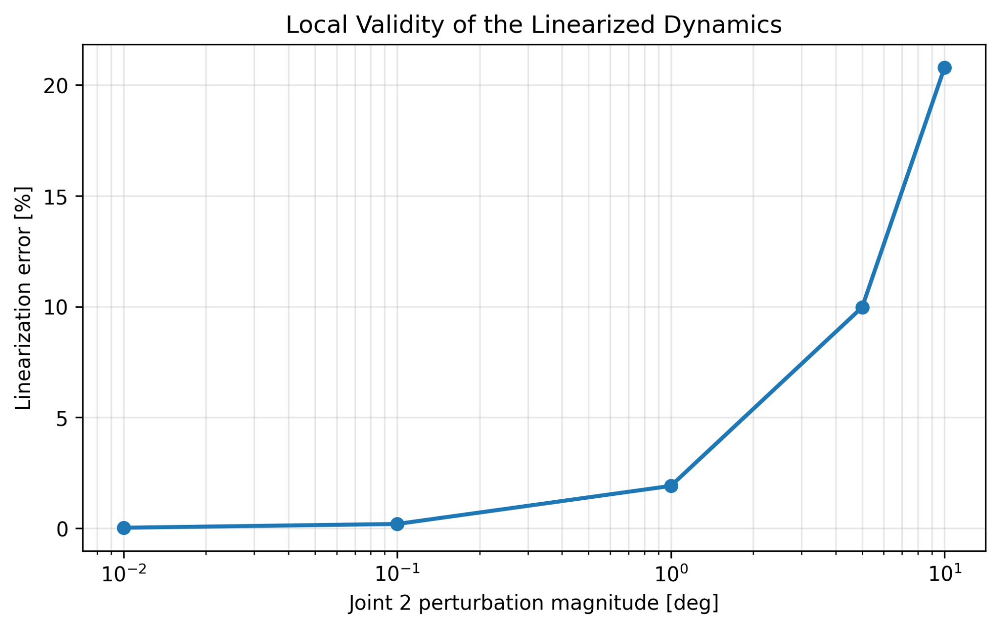
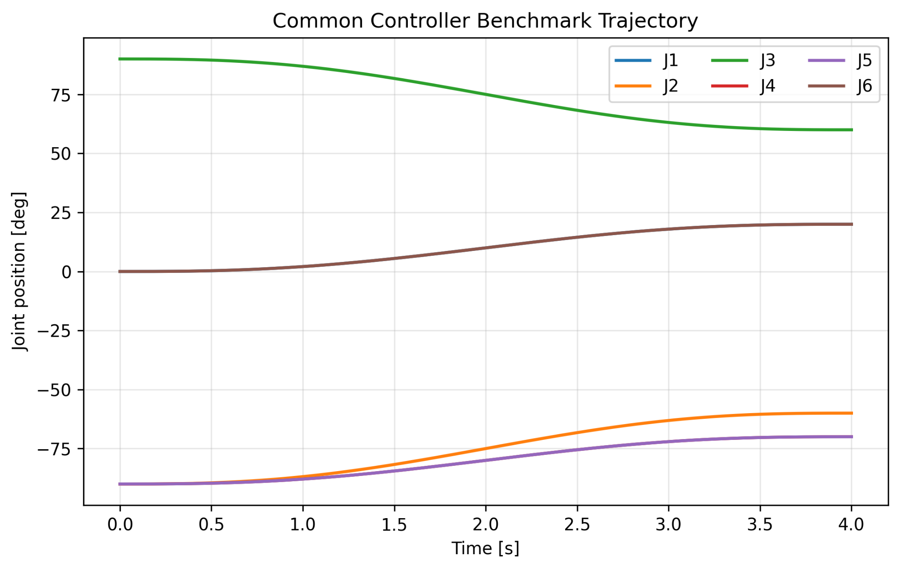
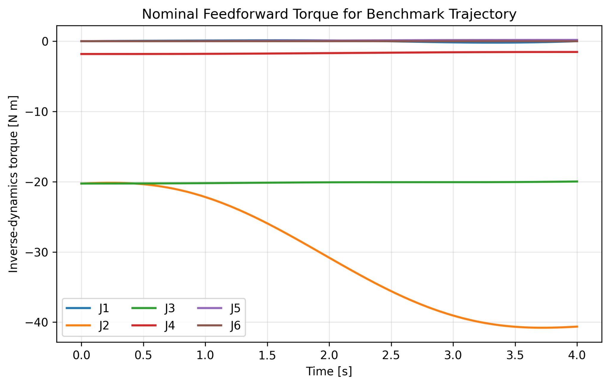
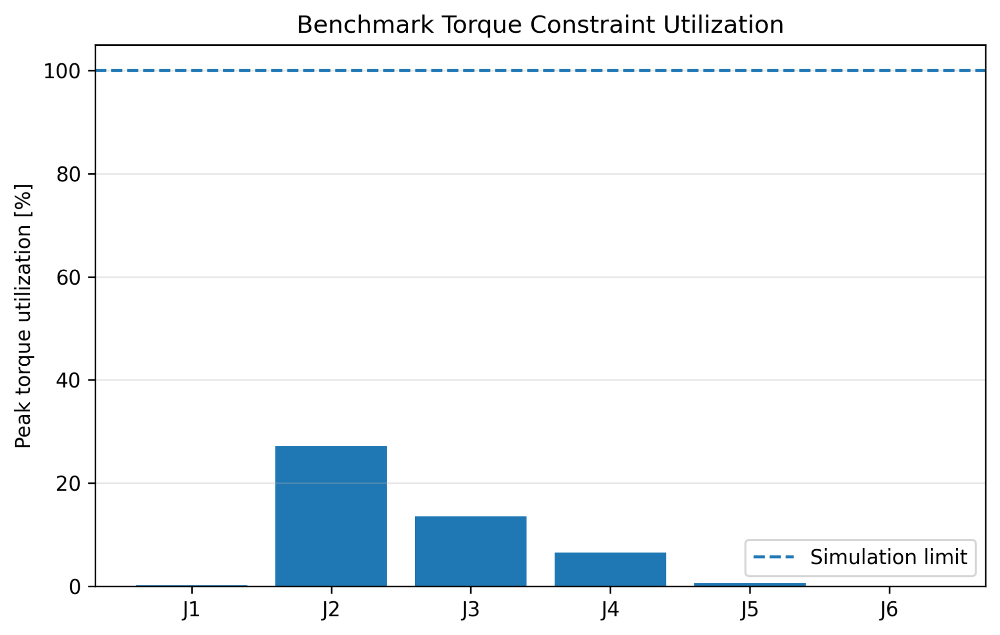

Control Systems · Part 1A
UR5e Kinematic & Dynamic Characterization
Starting from the UR5e model established in Pre-Part 1, I characterized the nonlinear plant before controller design. The study examines Jacobian conditioning and singularity approach, pseudoinverse versus damped least-squares behavior, configuration-dependent rigid-body dynamics, equilibrium and local linearization, benchmark feasibility, and Python–C++ numerical consistency.
1. From Model Validation to Plant Characterization
Pre-Part 1 established agreement between the analytical model and Isaac Sim for the physical-link transforms, Jacobian, mass matrix, and gravity generalized forces. Part 1A therefore does not rebuild the model. Instead, it asks which properties of the validated plant matter for controller design: numerical sensitivity near singularity, configuration-dependent inertia and gravity loading, local linear-model validity, controllability, and whether the selected benchmark excites meaningful dynamics without being dominated by saturation.
I retained two compatible representations. Standard DH geometry is used for forward kinematics and the geometric Jacobian, while rigid-body dynamics use the validated URDF physical-link frame chain. CoM locations and inertia tensors remain attached to their physical local link frames rather than being reassigned to DH frames.
2. Kinematic Characterization
Three configurations were used repeatedly throughout the analysis: the validated test pose [10, -40, 60, -30, 45, 20]°, the nominal working pose [0, -90, 90, -90, -90, 0]°, and the zero configuration. The nominal pose remained well conditioned, whereas the zero configuration lost one instantaneous rotational degree of freedom and reduced the full geometric Jacobian rank to five.
| Configuration | σmin(J) | κ(J) | Rank |
|---|---|---|---|
| Validated test pose | 0.15682 | 12.95 | 6 |
| Nominal working pose | 0.22236 | 8.31 | 6 |
| Zero configuration | ≈ 0 | ∞ | 5 |
3. Singularity Approach: Conditioning Before Rank Loss
I interpolated from the nominal working pose to the zero configuration. The minimum singular value decreased continuously toward zero while the condition number increased sharply before exact rank loss. This is important for control and inverse kinematics: a matrix can remain formally full rank while already becoming numerically aggressive.


4. Pseudoinverse vs. Damped Least Squares
To expose the weakest instantaneous task direction, I commanded a unit task-space velocity along the weakest left-singular vector. The Moore–Penrose pseudoinverse preserved the command but produced rapidly increasing joint-rate demand. Damped least squares (DLS), with λ = 0.05, bounded the amplification by deliberately accepting task-space error.
Because the commanded task velocity is a unit vector in the weakest singular direction, the plotted DLS joint-rate norm directly follows this scalar gain. The sweep is discrete, so it need not sample exactly σ = λ; an observed peak slightly below the theoretical maximum of 10 is therefore expected.


5. Configuration-Dependent Rigid-Body Dynamics
The mass matrix remained symmetric positive definite at all three investigated poses, but its eigenvalue spread, gravity loading, and Coriolis/centrifugal contribution changed substantially with configuration. The large mass-matrix condition numbers are not interpreted as dynamic instability; they reflect anisotropic generalized inertia and motivate solving the dynamics as a linear system rather than explicitly forming M(q)−1.
| Configuration | κ(M) | ||g|| [Nm] | ||c|| [Nm] |
|---|---|---|---|
| Validated test pose | 15101 | 52.862 | 0.5303 |
| Nominal working pose | 11713 | 28.716 | 0.4021 |
| Zero configuration | 18587 | 62.537 | 0.1581 |

6. Coriolis Structural Consistency
The Coriolis/centrifugal implementation was first checked using c(q,0) = 0 and the expected quadratic velocity dependence c(q,2q̇) = 4c(q,q̇). I then explicitly constructed the Christoffel-based matrix C(q,q̇) and tested both its agreement with the existing vector implementation and the standard rigid-body structural identity.
| Validation Quantity | Maximum Residual |
|---|---|
| max |Cq̇ − c| | 8.33 × 10⁻¹⁷ |
| max |(Ṁ − 2C) + (Ṁ − 2C)T| | 1.44 × 10⁻⁹ |
These results provide strong internal structural-consistency evidence for the numerical Christoffel implementation. They are intentionally described as internal model checks, not as an independent physics-engine validation.
7. Nonlinear Plant, Equilibria, and Linearization
The controller plant is a 12-state nonlinear torque-driven system. Static equilibria were defined with zero joint velocity and gravity-compensation input. Numerical linearization about the validated, nominal, and zero configurations produced full controllability rank 12/12 in all three cases.
To quantify how local the nominal linear model actually is, I perturbed Joint 2 while holding the equilibrium torque fixed. Relative linearization error increased from 0.0188% at 0.01° to 1.91% at 1°, 9.97% at 5°, and 20.79% at 10°. This gives a measured basis for interpreting the later LQR results rather than assuming one linearization represents the entire motion.

8. Common Controller Benchmark
Before tuning any controller, I fixed one common trajectory and one set of simulation constraints. The benchmark moves from [0, -90, 90, -90, -90, 0]° to [20, -60, 60, -70, -70, 20]° in 4.0 s using quintic time scaling, sampled at 2 ms.

The maximum reference velocity is only 7.81% of the 180°/s joint-speed specification. Nominal inverse dynamics also remain comfortably inside the adopted simulation torque constraints, so the benchmark is dynamically meaningful without being primarily a saturation test.


9. Python–C++ Cross-Validation
Python remains the numerical reference environment for analysis, plotting, parameter studies, and controller tuning. I reproduced the core plant in fixed-size C++/Eigen for later runtime controller work. The C++ dynamics intentionally use the same validated physical-link formulation rather than attaching inertia data directly to the DH chain.
| Quantity | Maximum Error | Result |
|---|---|---|
| TCP position | 3.80 × 10⁻⁹ | PASS |
| Jacobian singular values | 2.51 × 10⁻⁹ | PASS |
| Mass matrix M(q) | 4.93 × 10⁻¹⁰ | PASS |
| Gravity vector g(q) | 2.63 × 10⁻⁸ | PASS |
| Coriolis vector c(q,q̇) | 5.60 × 10⁻¹⁰ | PASS |
| Trajectory midpoint / endpoints | 0 at reported precision | PASS |
10. Engineering Conclusions
What Part 1A Established
Singularity sensitivity appears before rank loss, rigid-body dynamics change materially with configuration, the nominal linear model is demonstrably local, and the selected benchmark is feasible without being saturation dominated.
What Part 1B Must Test
PID, computed-torque, LQR, and MPC can now be compared on identical plant, trajectory, sampling, and constraint assumptions, with explicit attention to configuration dependence, model mismatch, control effort, and computation.
11. Technical Report
Part 1A Technical Report
The full report documents the mathematical formulation, numerical characterization, structural consistency tests, local linearization study, benchmark definition, Python–C++ cross-validation, limitations, and reproducibility map in greater detail.
Project by Sooyong Kim · Robotics Control Portfolio